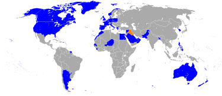

Dentro de la campaña aérea hubo notorios casos de bombardeos que causaron diversas víctimas civiles: 4 de febrero: Reactores, posiblemente británicos, destruyen un puente repleto de transeúntes en Nasiriya causando 47 muertos civiles y 102 heridos. 13 de febrero: Dos misiles estadounidenses guiados por láser destruyen el refugio antiaéreo civil de Amariya en Bagdad, causando más de 400 víctimas. 14 de febrero: bombarderos británicos atacan un puente de autopista en Faluya, pero fallan el objetivo y alcanzan un bloque de apartamentos y un mercado lleno de civiles, causando docenas de muertos. La coalición disparó entre 320 y 800 toneladas de uranio empobrecido. Entre 1994 y 2003, el número de defectos de nacimiento por cada 1.000 nacidos vivos en el hospital de maternidad de Basora se multiplicó por 17, pasando de 1,37 a 23 en el mismo hospital. En 2004, Irak tenía las tasas más altas de leucemia y linfoma del mundo.33 La destrucción de centrales hidroeléctricas y de otro tipo provocó la aparición de epidemias de gastroenteritis, cólera y tifus al impedir el funcionamiento de las plantas de tratamiento de agua potable y de aguas residuales. Como resultado, 100.000 civiles se vieron indirectamente afectados, mientras que la tasa de mortalidad infantil se duplicó. La Organización Mundial de la Salud (OMS) registró un fuerte aumento de los casos de cólera y fiebre tifoidea en la década de 1990. El informe de una misión de la ONU, encabezada por el subsecretario Martti Ahtisaari, enviada en marzo de 1991 para evaluar las necesidades humanitarias de Irak, describía el estado del país como «casi apocalíptico» Tras el conflicto, la Organización de las Naciones Unidas impuso a Irak un severo embargo que produjo gravísimos trastornos sociales y económicos en el país. En julio de 1992, aviones británicos y estadounidenses despegaron desde Turquía y quemaron cultivos en Irak. El 30 de junio de 1993, Estados Unidos bombardeó Irak en represalia por una supuesta conspiración para asesinar a George Bush. Entre el 16 y 19 de diciembre de 1998, mientras en EE. UU. arreciaba el «escándalo Clinton-Lewinsky», EE. UU. y Reino Unido llevaron a cabo sobre Irak una serie de bombardeos a la que llamaron Operación Zorro del Desierto. En 2002, George W. Bush acusó a Irak de constituir un «eje del mal» junto con Corea del Norte e Irán, desencadenando la invasión de Irak de 2003 bajo pretexto de tener gran cantidad de armas de destrucción masiva y de tener vínculos con Al Qaeda. El 5 de noviembre de 2006, tras dos años de juicio, Huseín fue condenado, junto con otros dos acusados, «a morir en la horca» por el Alto Tribunal Penal iraquí, que lo encontró culpable de haber cometido crímenes contra la humanidad, por la ejecución de 148 chiitas de la aldea de Duyail en 1982. También se le atribuye a su responsabilidad el ataque químico a Halabja (1988), el aplastamiento de la rebelión chiita (1991), las fosas comunes (1991), la guerra contra Irán (1980-1988) y la invasión de Kuwait (1990). La ejecución de Sadam Huseín tuvo lugar el día 30 de diciembre de 2006, aproximadamente a las 06:05 hora local (03:05 GMT), como sentencia del juicio, el exdictador fue condenado a la horca. Se le ejecutó en presencia de un clérigo, un médico y un juez. Su cuerpo fue entregado a sus familiares para ser enterrado en su ciudad natal de Tikrit.
mapa que muestra el frente primncipal de la guerra del golfo
mapa representativo de la coalicion formada por la ONU
para entendender mejor las consecuencias despues de la guerra aqui puedes ver un video
click aqui click aqui